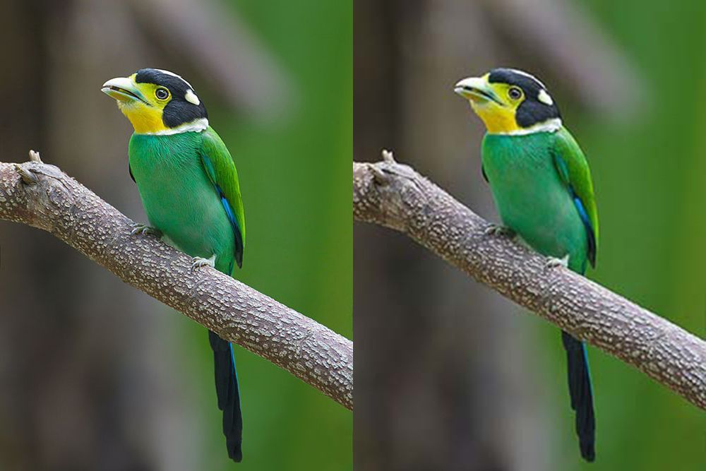

Mastering Lossless Image Compression: Preserving Quality while Reducing File Sizes Safely
1 min read
5 Views
Your images should be safe and securely compressed! Privacy matters
In the digital world, where visuals hold immense power, optimizing image file sizes becomes crucial for maintaining website performance. However, reducing file sizes shouldn't mean compromising image quality. That's where safe lossless image compression comes into play. In this blog, we'll explore the concept of safe lossless image compression, its benefits, and techniques that ensure both optimal file size reduction and visual integrity. Join us as we delve into the world of safe lossless image compression and discover the secrets to mastering this essential skill.
-
Understanding Safe Lossless Image Compression
Safe image compression refers to the process of reducing image file sizes without compromising the quality and integrity of the visual content. It emphasizes the preservation of visual fidelity and ensures that no important image data is lost during the compression process.
-
Benefits of Safe Lossless Image Compression:
Enhanced Website Performance and User Experience: By reducing image file sizes, websites load faster, leading to improved user experience, longer visit durations, and increased conversions. Users can access your content quickly and enjoy a smooth browsing experience.
-
Safe lossless image compression offers several advantages:
Safe lossless compression techniques retain all the original image information, ensuring that visual quality is maintained. This is crucial for preserving details, colors, and overall image accuracy, especially for professional and artistic purposes.
-
Secure Preservation of Visual Fidelity:
Safe lossless compression techniques retain all the original image information, ensuring that visual quality is maintained. This is crucial for preserving details, colors, and overall image accuracy, especially for professional and artistic purposes.
-
Data Transfer Reduction.
Transferring files from the client's system to a server consumes bandwidth and increases the risk of data breaches. Client-side compression eliminates the need for file uploads, reducing data transfer requirements. By compressing images locally, you conserve bandwidth, enhance network efficiency, and minimize potential security vulnerabilities.
-
Techniques for Safe Lossless Image Compression:
-
Removing Metadata and Exif Data:
Remove unnecessary metadata and Exif data from images to reduce file sizes while preserving the visual content. This includes camera settings, location information, and timestamps that are not essential for displaying the image.
-
Utilizing Lossless Compression Algorithms:
Choose reliable lossless compression algorithms such as DEFLATE, PNG, or WebP, which retain all image data while efficiently reducing file sizes. These algorithms ensure a safe compression process without compromising visual quality.
-
Resizing and Cropping Images:
Before compression, resize and crop images to the required dimensions to eliminate unnecessary pixels. This helps reduce file sizes while maintaining the image's aspect ratio and visual impact.
-
Minimizing Color Palette Safely:
Optimize images by minimizing the color palette while ensuring that essential colors and gradients are preserved. This reduces file sizes without perceptible loss in quality, especially for images with limited color variations.
-
Leveraging Progressive Image Loading:
Implement progressive image loading techniques to display a low-resolution version of the image initially, allowing for faster page load times. The image gradually renders with higher detail, providing an improved user experience.
-
The Importance of Safe Image Compression for SEO
Safe lossless image compression plays a vital role in search engine optimization (SEO) by contributing to faster page load times. This leads to improved search engine rankings, increased organic traffic, and a positive user experience, especially on mobile devices.
Mastering safe lossless image compression is essential for maintaining optimal website performance, delivering an exceptional user experience, and ensuring the preservation of visual fidelity. By implementing safe compression techniques and following best practices, you can strike the perfect balance between file size reduction and image quality. Enhance your website's performance, engage your audience, and improve your SEO efforts by adopting safe lossless image compression today.
listen audio